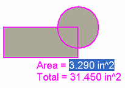

Compute an area
Use either of these procedures to get quantitative information—area, perimeter, centroid, moments of inertia, and principal moments of inertia—about one or more closed regions. Use the second procedure to create and maintain a persistent area object, which you can use for further engineering calculations.
You must lock a sketch plane to use this command in the 3D environments.
Get area information only
-
Choose Inspect tab→Evaluate group→Area.
-
On the Area command bar, click Area Information .
-
Click inside one or more closed 2D boundaries.
As you click, the selected geometry is filled and the area calculation is displayed next to the cursor.

-
When you have selected all of the geometry you want to include in the calculations, click the green check mark.
The Area Properties page on the Info dialog box automatically displays the information for the selected area. In the graphic window, upon completion of the command, a coordinate system is placed to mark the center of the selected area.
Tip:The filled area and quantitative information for the geometry is temporary only.
-
When you close the Info dialog box, the calculations are discarded. To preserve the information, you can select the Copy To Clipboard button on the dialog box and then paste the text into a preferred text editor or spreadsheet.
-
When you close the Info dialog box, the selected geometry reverts to 2D elements.
-
Create area object for engineering calculations
-
Choose Inspect tab→Evaluate group→Area.
-
On the Area command bar, click Create Area .
-
Click inside one or more closed 2D boundaries.
As you click, the selected geometry is filled and the current area calculation is displayed and updated next to the cursor.
-
When you have selected all of the geometry you want to include in the area object calculations, click the green check mark.
The fill style for the geometry changes to indicate it is now a selectable object.
Tip:The center of the area is marked by the axes of two coordinate systems:
-
(X,Y) represents the moments of inertia about the global X and Y axes.
-
(PX,PY) represents the principal moments of inertia.

-
-
Choose Home tab→Select group→Select and then click inside the filled area object.
-
On the Area command bar, click Area Properties .
The Info dialog box displays the Area Properties page, as well as options for modifying the area fill and coordinate system display.
Tip:When you create an area object, the information in the Info dialog box persists even when you close it.
-
You can modify the area and then update the calculations. See the Help topic, Recompute a modified area object.
-
You can select and use the filled area in other engineering calculations, such as with the Goal Seek command. See the Help topic, Calculate a target value by goal seeking.
-
How do I
Recompute a modified area objectLearn more
Using area in calculationsLook up more details
Area commandArea command bar
Info dialog box